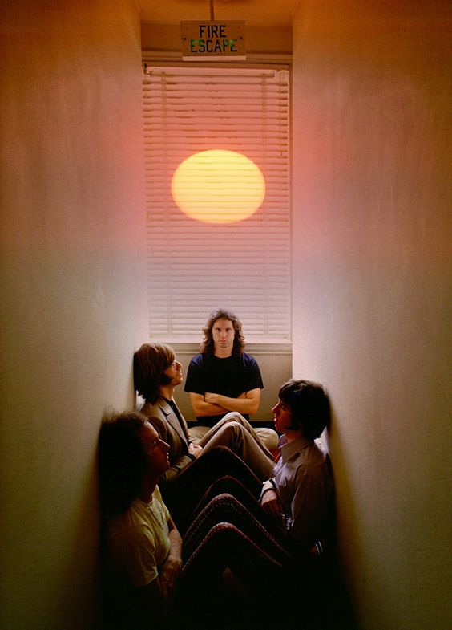

The Doors

The Doors fue una banda de rock estadounidense formada en 1965 en Los Ángeles, California, por el cantante Jim Morrison, el tecladista Ray Manzarek, el guitarrista Robby Krieger y el batería John Densmore. Son conocidos por su sonido único y su influencia en la música rock y psicodélica, con clásicos como "Light My Fire" y "Riders on the Storm".